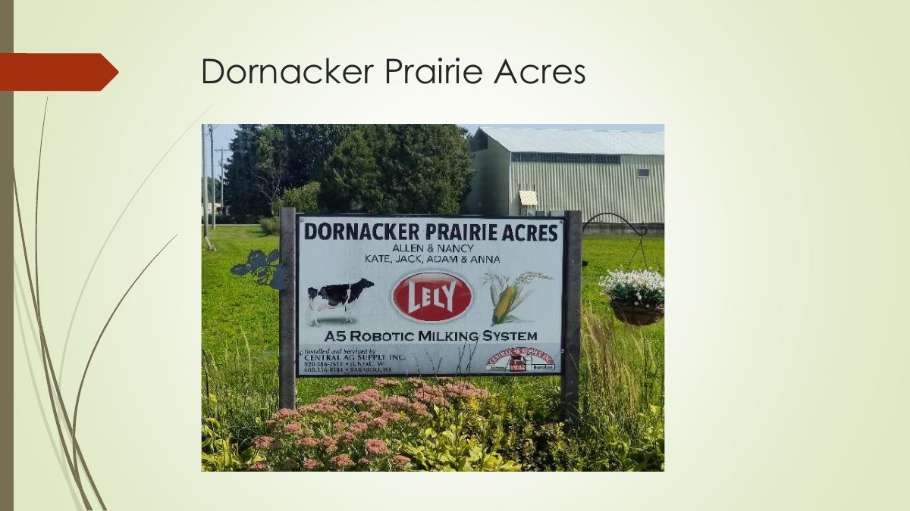
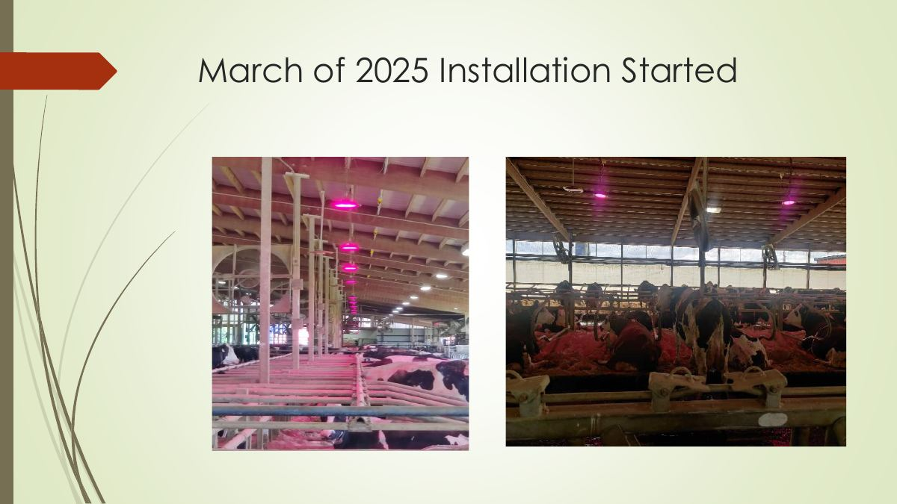
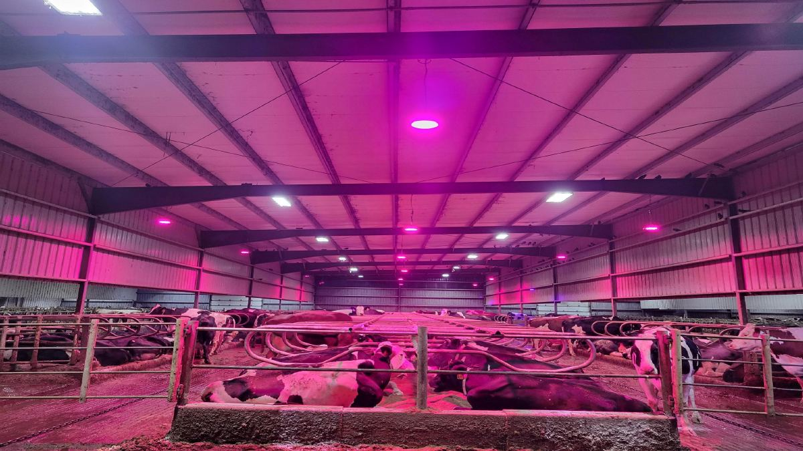
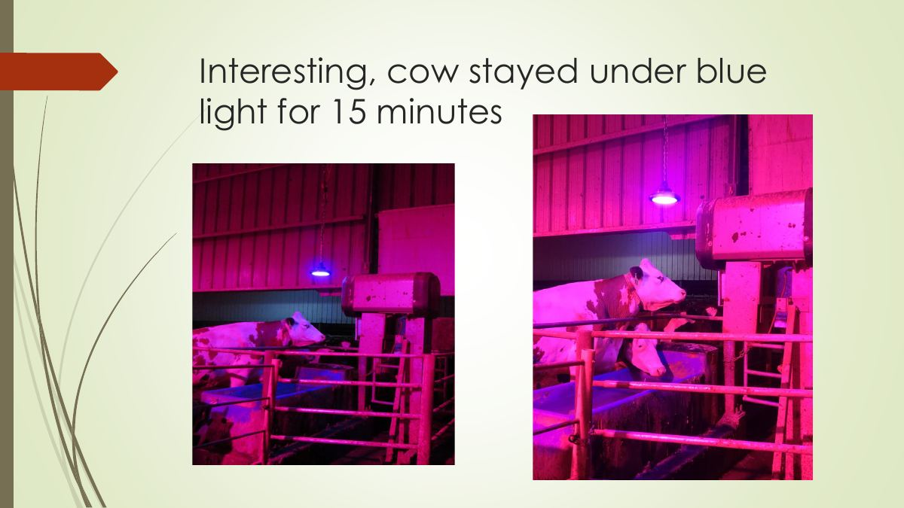
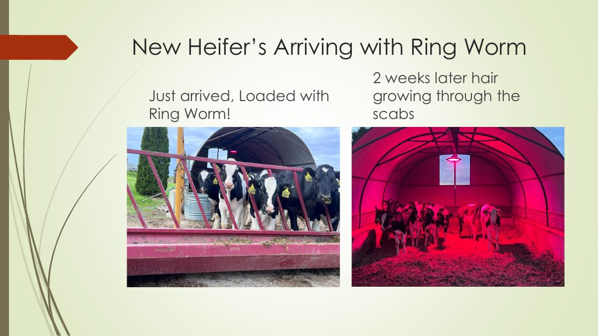

Emerging breakthrough technology
Creating a healthier and safer environment for both animals and humans.
Red and blue frequency LED lighting for the dairy barn, combining two different light technologies in one fixture.
See the Dornacker Prairie Acres resultsAbout
White Leaf Technology Group brings frequency LED lighting to the dairy farm, for milking cows and heifers.
Our study site is Dornacker Prairie Acres, where installation started in March of 2025.

Technology
Light emitting diodes (LEDs) are semiconductors that convert electrical energy into light energy. The color of the emitted light depends on the semiconductor material and composition.
In 1993, Quantum Devices (Barneveld, WI) developed a light-emitting diode (LED) for NASA to use in their plant growth experiments.
Red wavelengths
- Red wavelengths penetrate directly through an animal’s skin and eyes.
- These wavelengths have the ability to transform into cellular energy and ‘kick start’ a series of metabolic events. Two of the most important reactions being: the stimulation of collagen production and the increase of adenosine triphosphate (ATP); which causes a boost of energy to the cells.
Blue wavelengths
- Laboratory and clinical studies have validated the “killing power” of Blue Light over a whole range of pathogenic bacteria: Staphylococcus aureus, MRSA, coagulase-negative Staphylococcus, Streptococcus, Enterococcus, Clostridium, Bacillus, Listeria, Acinetobacter, Pseudomonas, Klebsiella, Proteus, Salmonella, Escherichia and E. coli.
Both technologies are operating at different frequencies/wave length.
Applications
- Technology used in new born calves 1-60 days
- Technology used prior and during calf delivery
- Technology used in the calving pen or a maternity pen/stall
- Technology used in free stall barn over the stalls
- Primary lighting is used in the main feed aisle while the therapy lighting is used in the free stall areas.
- All blue lights applied in the Carne tanks to kill bacteria and fungi
- All blue lights applied directly over the water troughs to kill bacteria in drinking water

Results
Dornacker Prairie Acres, installation started March of 2025.
- Started seeing the East group under the lights move up 3-5 lbs on the 3/23/25 report.
- Milking production increase of 4.5 – 6.5 lbs more per day.
Water trough test
Blue LED lights were installed over water troughs. A total of six samples were pulled: three under the blue bacteria-killing lights and three from a group without them. Clean Water Testing LLC, located in Appleton, WI, did the certification. The cleaning cycle was followed to maintain consistency.
ROI evaluation
| Initial capital investment, (14) Frequency Lights and installation | $16,300 (per cow cost $98.78) |
| Electrical energy cost, 24 hours, to run (14) lights | $13.44 |
| 165 cows, additional 4 lbs per day (660 lbs × $0.18/lb) | $118.00 additional milk revenue per day |
| Operation profit | $104.56 per day × 365 days = $38,164.40 |
| Payback | Paid for in 155 days, around 5 months |


